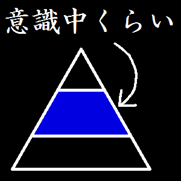

意識中くらい
Middle Level Of Awareness (MLOA)
Links
GitHub/MLOA
Works（一部）
金魚救い
プレイ
https://mloa.github.io/kingyo-sukui/
リポジトリ
https://github.com/MLOA/kingyo-sukui
ProtoPedia
https://protopedia.net/prototype/3168